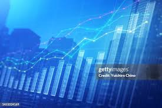

The Nigerian economy is one of the largest in Africa. Since the late 1960s it has been based primarily on the petroleum industry. A series of world oil price increases from 1973 produced rapid economic growth in transportation, construction, manufacturing, and government services. Because this led to a great influx of rural people into the larger urban centres, agricultural production stagnated to such an extent that cash crops such as palm oil, peanuts (groundnuts), and cotton were no longer significant export commodities. In addition, from about 1975 Nigeria was forced to import such basic commodities as rice and cassava for domestic consumption. This system worked well as long as revenues from petroleum remained constant, but since the late 1970s the agricultural sector has been in continuing crisis because of the fluctuating world oil market and the country’s rapid population growth. Although much of the population remained engaged in farming, too little food was produced, requiring increasingly costly imports. The various governments (most of them military-run) have dealt with this problem by banning agricultural imports and by focusing, albeit briefly, on various agricultural and indigenization plans.
In the late 1990s the government began to privatize many state-run enterprises—especially in communications, power, and transportation—in order to enhance the quality of service and reduce dependence on the government. Most of the enterprises had been successfully privatized by the beginning of the 21st century, but a few remained in government hands.
At the turn of the 21st century, Nigeria continued to face an unsteady revenue flow, which the government attempted to counter by borrowing from international sources, introducing various austerity measures, or doing both at the same time. As a result, an ever-increasing share of the national budget was needed for debt repayment, which, with corruption dominating government operations, meant that very little of Nigeria’s income was being spent on the people and their needs. The country benefited from a 2005 debt-relief plan by which the majority of its debt to a group of creditor countries known as the Paris Club would be forgiven once it had repaid a certain amount. Nigeria successfully met this condition in 2006, becoming the first African country to settle its debt with the group. Nigeria entered a recession in 2016, partly because of falling global oil prices, but saw progress with recovery within the next couple of years. (For information on the role women have played in Nigeria’s economy and culture, see Sidebar:The Role of Nigerian Women.)
Nigeria has no shortage of arable land overall, but there is an extreme shortage of farmland in the most densely settled areas of the southeastern states and around Kano, KatsinaKatsina, and Sokoto. This has forced large numbers of Igbo, Ibibio, and Hausa people to migrate to other parts of the country. Often, however, cultural traditions, such as the prohibition against selling family land, have restricted access to farmland in some localities that appear to have abundant cultivable land, and, in the far north, desertification has severely limited the land area available for cultivation.
Roughly between one-fifth to one-half of all Nigerians obtain a living from agricultural production. Most are small-scale subsistence farmers who produce only a little surplus for sale and who derive additional income from one or more cash crops and from the sale of local crafts. Because the soil is not totally amenable to mechanized equipment, the hoe and matchet (machete) continue to be the dominant farm implements. The shortage of farmland in some localities and limited access to land in others are among the factors that restrict the size of farmland cultivated per family. Environmental deterioration, inferior storage facilities, a poor transport system, and a lack of investment capital contribute to low productivity and general stagnation in agriculture. With the population growing rapidly and urbanization accelerating, the food deficit continues to worsen despite government efforts to rectify the situation.
Root crops—notably yams, taro, and cassava—are the main food crops in the south, while grains and legumes—such as sorghum, millet, cowpeas, and corn(maize)—are the staple crops of the drier north. Rice is also an important domestic crop. Trees—notably oil palm, cacao, and rubber trees—are the principal industrial crops of the south, while peanuts (groundnuts) and cotton are produced in the north. Small-scale farmers dominate the production of industrial crops, as they do with staple food crops. Cocoa beans, from the cacao tree, are the major agricultural export; production of other industrial crops has declined, owing to the general stagnation in agriculture.
Click it to know the society and government we havewelcome to port harcourt